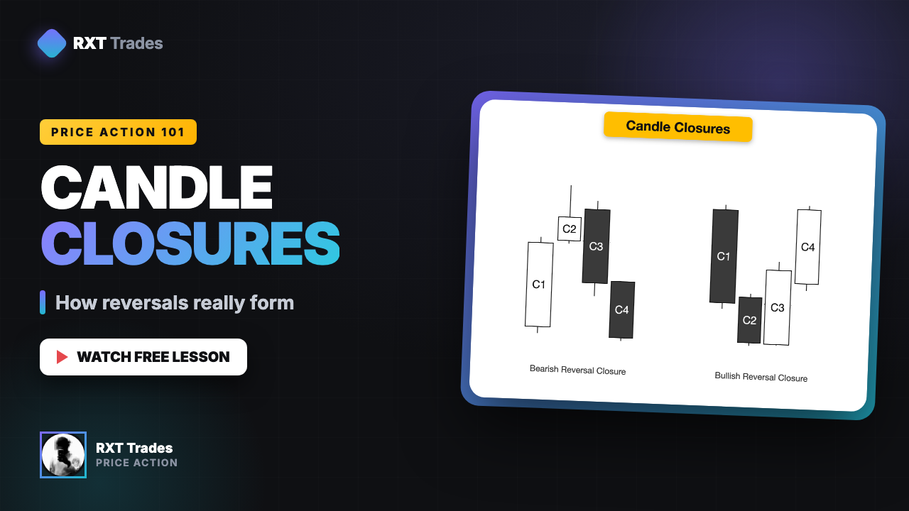
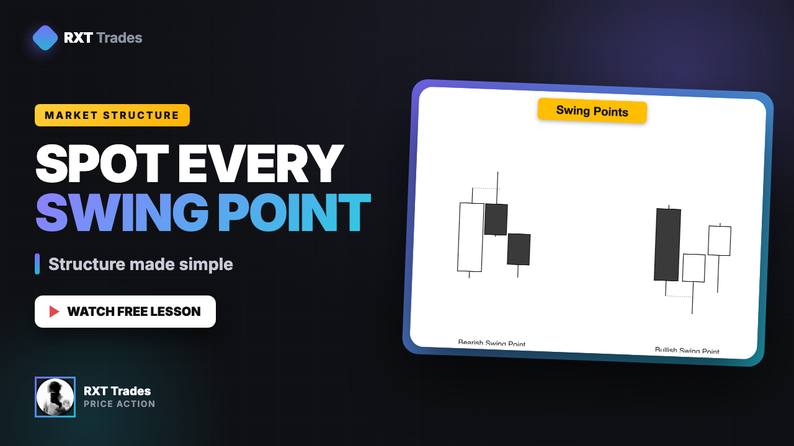
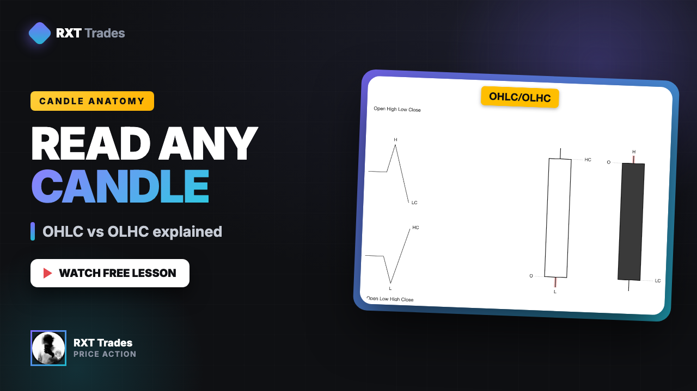

Every lesson behind the model — filtered by what you want to learn next.

The four-candle reversal closure — how to read momentum shifting before price actually turns.

Bullish vs bearish swing points and how to mark real market structure on any timeframe.

Candle anatomy — open, high, low, close — and why the sequence inside the candle matters.
Exactly how I use the market open within my process to confirm directional frameworks and high-probability entries.
The exact three steps I would follow to build consistency and reach profitability if I had to start from zero.
A structured three-step process for capturing ideal reversal and continuation expansions each week.
Using the 7-hour timeframe to simplify daily profiling and confirm bias under a defined, repeatable process.
Navigating consolidation with the daily range protocol and capitalising on the expansion days that follow.
Framework, confirmation, entry, and management — the four-step process that makes the model work.